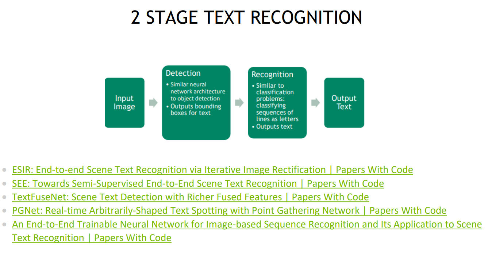
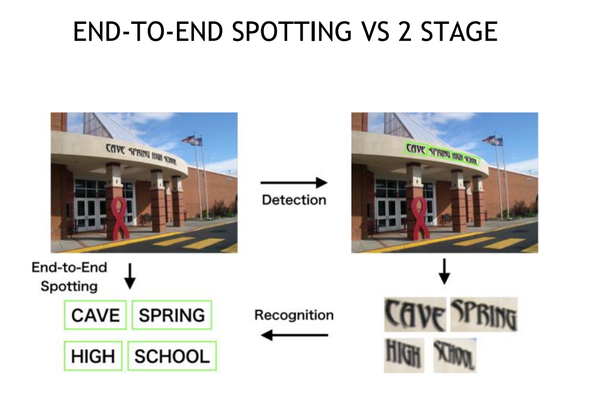
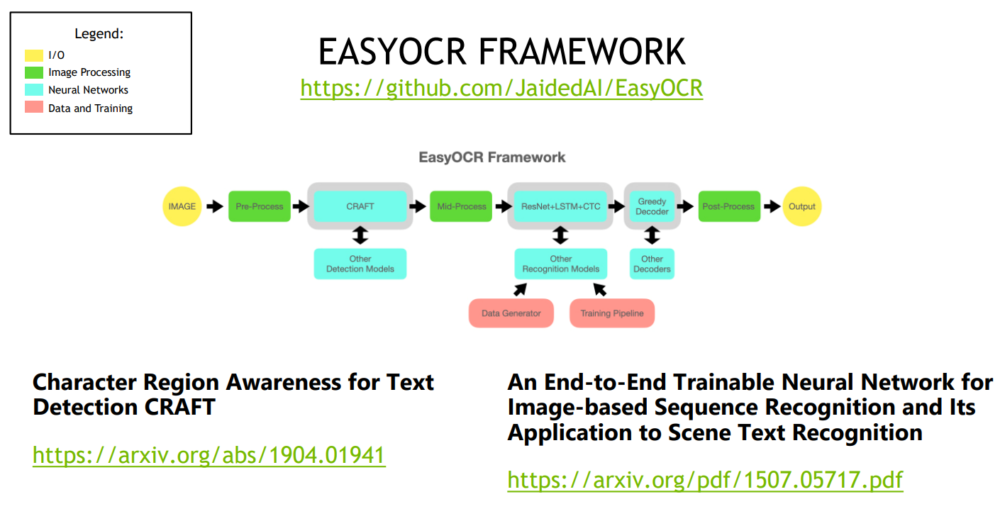
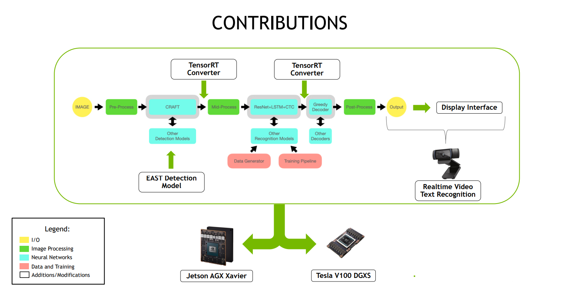
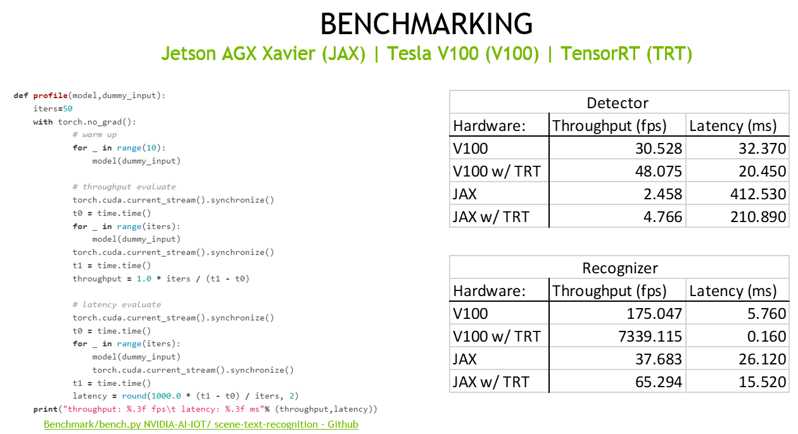
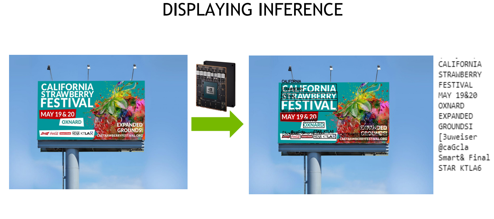
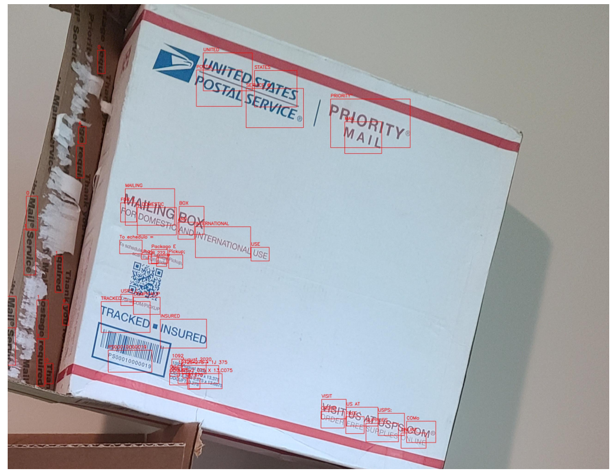

Projects
Abstract:
Addressing missing modalities and limited labeled data is crucial for advancing robust multimodal learning. We propose Robult, a scalable framework designed to mitigate these challenges by preserving modality-specific information and leveraging redundancy through a novel information-theoretic approach. Robult optimizes two core objectives: (1) a soft Positive-Unlabeled (PU) contrastive loss that maximizes task-relevant feature alignment while effectively utilizing limited labeled data in semi-supervised settings, and (2) a latent reconstruction loss that ensures unique modality-specific information is retained. These strategies, embedded within a modular design, enhance performance across various downstream tasks and ensure resilience to incomplete modalities during inference. Experimental results across diverse datasets validate that Robult achieves superior performance over existing approaches in both semi-supervised learning and missing modality contexts. Furthermore, its lightweight design promotes scalability and seamless integration with existing architectures, making it suitable for real-world multimodal applications.

Abstract:
Multimodal alignment constructs a joint latent vector space where modalities representing the same concept map to neighboring latent vectors. We formulate this as an inverse problem and show that, under certain conditions, paired data from each modality can map to equivalent latent vectors, which we refer to as perfect alignment. When perfect alignment cannot be achieved, it can be approximated using the Singular Value Decomposition (SVD) of a multimodal data matrix. Experiments on synthetic multimodal Gaussian data verify the effectiveness of our perfect alignment method compared to a learned contrastive alignment method. We further demonstrate the practical application of cross-modal transfer for human action recognition, showing that perfect alignment significantly enhances the model's accuracy. We conclude by discussing how these findings can be applied to various modalities and tasks and the limitations of our method. We hope these findings inspire further exploration of perfect alignment and its applications in representation learning.

Abstract:
In order to unlock the potential of diverse sensors, we investigate a method to transfer knowledge between modalities using the structure of a unified multimodal representation space for Human Action Recognition (HAR). We formalize and explore an understudied cross-modal transfer setting we term Unsupervised Modality Adaptation (UMA), where the modality used in testing is not used in supervised training, i.e. zero labeled instances of the test modality are available during training. We develop three methods to perform UMA: Student-Teacher (ST), Contrastive Alignment (CA), and Cross-modal Transfer Through Time (C3T). Our extensive experiments on various camera+IMU datasets compare these methods to each other in the UMA setting, and to their empirical upper bound in the supervised setting. The results indicate C3T is the most robust and highest performing by at least a margin of 8%, and nears the supervised setting performance even in the presence of temporal noise. This method introduces a novel mechanism for aligning signals across time-varying latent vectors, extracted from the receptive field of temporal convolutions. Our findings suggest that C3T has significant potential for developing generalizable models for time-series sensor data, opening new avenues for multi-modal learning in various applications.

Abstract:
Despite living in a multi-sensory world, most AI models are limited to textual and visual interpretations of human motion and behavior.
Inertial measurement units (IMUs) provide a salient signal to understand human motion; however, they are challenging to use due to their uninterpretability and scarcity of their data.
We investigate a method to transfer knowledge between visual and inertial modalities using the structure of an informative joint representation space designed for human action recognition (HAR).
We apply the resulting Fusion and Cross-modal Transfer (FACT) method to a novel setup, where the model does not have access to labeled IMU data during training and is able to perform HAR with only IMU data during testing.
Extensive experiments on a wide range of RGB-IMU datasets demonstrate that FACT significantly outperforms existing methods in zero-shot cross-modal transfer.

Abstract:
Despite living in a multi-sensory world, most AI models are limited to textual and visual understanding of human motion and behavior.
Inertial measurement sensors provide a signal for AI to understand motion, however, in practice they has been understudied due to numerous difficulties and the uniterpretability of the data to humans.
In fact, full situational awareness of human motion could best be understood through a combination of sensors.
In this survey we investigate how knowledge can be transferred and utilized amongst modalities for Human Activity/Action Recognition (HAR), i.e. cross-modality transfer learning.
We motivate the importance and potential of IMU data and its applicability in cross-modality learning as well as the importance of studying the HAR problem.
We categorize HAR related tasks by time and abstractness and then compare various types of multimodal HAR datasets.
We also distinguish and expound on many related but inconsistently used terms in the literature, such as transfer learning, domain adaptation, representation learning, sensor fusion, and multimodal learning, and describe how cross-modal learning fits with all these concepts.
We then review the literature in IMU-based cross-modal transfer for HAR.
The two main approaches for cross-modal transfer are instance-based transfer, where instances of one modality are mapped to another (e.g. knowledge is transferred in the input space), or feature-based transfer, where the model relates the modalities in an intermediate latent space (e.g. knowledge is transferred in the feature space).
Finally, we discuss future research directions and applications in cross-modal HAR.
.png)

.png)
Description:
Generative Pretrained Transformers (GPT), e.g., ChatGPT, have recently changed the landscape of AI research with their size, scale, and performance. Researchers have discovered that with ample data and compute resources, this architecture performs very well and shows "emergent behavior," i.e., the ability to perform well or demonstrate knowledge on tasks it was not explicitly trained on. Netradyne is a fleet safety company that focuses on dash camera driving analytics, and they have vast amounts of driver data, providing a unique setting to leverage GPT-style models. The DriverGPT project aims to learn to predict future driver behaviors based on previous time steps. This could be used to predict short-term trajectories, such as potential collisions, or long-term behaviors, such as the overall trends of a driver's safety score and how it compares to other drivers. Nonetheless, extending GPT to driving data presented many challenges, such as how to tokenize continuous data or how to use GPT on time series data from devices with different frame rates and specifications. Many small-scale experiments were conducted to address these questions.
Abstract:
Robotic grasping presents a difficult motor task in real-world scenarios, constituting a major hurdle to the deployment of capable robots across various industries.
Notably, the scarcity of data makes grasping particularly challenging for learned models.
Recent advancements in computer vision have witnessed a growth of successful unsupervised training mechanisms predicated on massive amounts of data sourced from the Internet, and now nearly all prominent models leverage pretrained backbone networks.
Against this backdrop, we begin to investigate the potential benefits of large-scale visual pretraining in enhancing robot grasping performance.
This preliminary literature review sheds light on critical challenges and delineates prospective directions for future research in visual pretraining for robotic manipulation.

Abstract:
The transformer neural network architecture allows for autoregressive sequence-to-sequence modeling through the use of attention layers. It was originally created with the application of machine translation but has revolutionized natural language processing. Recently, transformers have also been applied across a wide variety of pattern recognition tasks, particularly in computer vision. In this literature review, we describe major advances in computer vision utilizing transformers. We then focus specifically on Multi-Object Tracking (MOT) and discuss how transformers are increasingly becoming competitive in state-of-the-art MOT works, yet still lag behind traditional deep learning methods.


Description:
The goal of this internship project was to create a novel multi object tracking architecture using transformers.
I investigated existing Multi Object trakcing methods such as Global Tracking Transformers (GTR), Trackformer and MOTR and sought to improve them.
All the existing methods do not utilize a transformers capability to deal with long range dependencies.
GTR feeds in detections to a transformer to perform tracking over a window of frames, however, they lose contextual information by only feeding in detections, and they rely heavily on an accurate detector.
On the other hand, Trackformer and MOTR autogressively feed in pairs of frames, not just detections, to detect and track objects in the next frame, however, they only work with a window of 2 frames at once.
During this internship I helped develop an object tracking architecture that fuses multiple frames of features into the transformer and outputs multiple frames of object detections and tracks as output.
Work on this project is ongoing and experiments are being conducted. We refer to our model as Trackformer++ as it builds off of Trackformer. A visual comparison is shown below.


Agriculture is facing a labor crisis, leading to increased interest in fleets of small, under-canopy robots (agbots) that can perform precise, targeted actions (e.g., crop scouting, weeding, fertilization), while being supervised by human operators remotely.
However, farmers are not necessarily experts in robotics technology and will not adopt technologies that add to their workload or do not provide an immediate payoff.
In this work, we explore methods for communication between a remote human operator and multiple agbots and examine the impact of audio communication on the operator's preferences and productivity.
We develop a simulation platform where agbots are deployed across a field, randomly encounter failures, and call for help from the operator.
As the agbots report errors, various audio communication mechanisms are tested to convey which robot failed and what type of failure occurs.
The human is tasked with verbally diagnosing the failure while completing a secondary task.
A user study was conducted to test three audio communication methods: earcons, single-phrase commands, and full sentence communication.
Each user completed a survey to determine each method's overall effectiveness and preferences.
Our results suggest that the system using short phrases is the most positively perceived by participants and may allow for the human to complete the secondary task more efficiently.
Full paper accepted as Oral Presentation @ IEEE ROMAN 2022, Naples Italy: Examining Audio Communication Mechanisms for Supervising Fleets of Agricultural Robots
Abstract:
Graphics Processing Units (GPUs) and manycore processors in general are some of the most important and powerful tools in modern computing as their ability to massively parallelize computations is an excellent way to accelerate computationally intensive programs. Due to the massive presence of GPUs in heterogeneous systems, the large design space of parallel programming, and the substantial variance in performance between low and high end implementations of GPU kernels, effectively developing this software is a critical challenge. The development and optimization process can be automated. Successful projects in this area take advantage of the affine properties of the input functionality as identified by polyhedral models in order to output optimized kernels for manycore processors.
This paper proposes ScaleCUDA, a tool for automated GPU code (CUDA) generation and optimization. ScaleCUDA looks to take advantage of two essential components of high end optimization: identification of affine properties through polyhedral modelling and analysis at multiple levels of abstraction. It will do so by way of ScaleHLS\cite{ye2022scalehls}, a high-level synthesis (HLS) design space exploration tool. ScaleHLS uses MLIR, a multi-level compiler infrastructure, in order to effectively explore the design space at various levels of abstraction and create an optimized HLS design. To translate C++ or HLS C++ input into the desired optimal CUDA output, ScaleCUDA bridges the gap between the polyhedral and CUDA representations in MLIR while taking advantage of the HLS optimization and design space exploration tools of ScaleHLS. We test the pipeline with GEMM C++ code and show similar performance to code directly compiled and optimized through NVIDIA cuda frameworks.
Our implementation is open-sourced and can be accessed on the ScaleCUDA branch here: ScaleCUDA branch. Our experimentation code is also provided here: Experimentation Code.
Description:
I worked in NVIDIA’s Autonomous machines unit, under the Jetson Dev Tech team.
The Jetson product line is NVIDIA’s embedded AI GPU for edge IoT and mobile robotics applications.
The goal of my project was to develop an open-source Scene Text Recognition (STR) system for NVIDIA partners to use, as well as for NVIDIA’s own internal projects to use.
I initially researched and benchmarked various state of the art STR models (CSTR, STRN, EasyOCR) and chose the 2 stage EasyOCR framework to further develop, as it performed the best.
The first stage is text detection, where bounding boxes are drawn around the text, and the second stage is recognition, where the images are cropped to those bounding boxes and classification is performed on the letters/words.
I used NVIDIA’s TensorRT framework to speed up the model’s inference on the V100 GPU and the Jetson AGX Xavier (JAX). TensorRT approximately doubled the model’s inference throughput. The V100 GPU is one of NVIDIA’s top industry grade GPUs thus performed better, however, the JAX performed significantly well for its small form factor, so much so that it was able to perform STR in real-time with a video camera at approximately 30 fps. This fast inference real-time video application was packaged in a docker container for easy deployment.
Below are some diagrams of the project.
The open-source code is on NVIDIA-AI-IOT GitHub:Scene Text Recognition Github.
My work was also showcased on NVIDIA's Jetson AI Labs Youtube Channel:
      
Abstract:
Learning based approaches for control and decision making have rapidly made their way into various domains as advances in data collection, compute, and algorithmic breakthroughs have allowed machines to perform at levels comparable to (or better) than human experts.
Despite these advances however, there are still domains where a fully autonomous agent with no human supervision or backup faces hurdles from both a regulatory and public trust perspective.
In particular, safety critical applications of autonomy without human oversight remains a contested approach.
The most prominent example of this can be seen in the autonomous driving domain where companies continue to train and require ``safety drivers'' to monitor and be ready to take over vehicle control at any given moment.
Even in fully autonomous products such as Waymo One's autonomous taxi service in Phoenix, safety drivers are often used during inclement weather or dispatched to take control when the vehicle senses difficulty.
The goal of our project is to look at different ways of characterising uncertainty in an autonomous policy and use them to develop control that is shared between the human and the autonomous agent.
To this end, we look at how this information can be obtained from reinforcement learning (RL) based policies and imitation learning based policies.
In the RL policies, we first consider a Deep Q-Learning (DQN) policy without modification and use the Q-values provided by the network.
We then retrain the policy using Bayesian Deep Learning to more explicitly characterise uncertainty.
We then directly try to learn a Bayesian Neural Network policy through behaviour cloning.
During runtime, the policies are preempted when various uncertainty thresholds are reached and a human is asked to provide the next action.
We compare the performance of these shared policies among each other as well as a fully autonomous policy to see which methods of requesting human input has the best overall performance.

Abstract:
As robots become more prevalent, designing an efficient communication system for human-robot interaction becomes an important yet challenging problem. Visual and tactile interfaces are very common in autonomous robots and intelligent systems; however, audio-based interfaces are a relatively new and developing area. We study the scenario in which a fleet of agricultural robots need to communicate a failure case for a human operator to diagnose and respond to in a teleoperation setting. These robots must have a simple yet effective communication system so farmers that may not have robotic experience can operate them. In this thesis project, we develop an agbot simulation platform and various audio communication techniques and characterize the most effective and natural interface. First, autonomous farms of varying complexity are created using the OpenAI Gridworld simulation. Then, a user study with 11 participants is conducted with this simulation to test three audio communication methods: sounds, single-word commands, and full natural language communication. As the robots on the farm experience and report errors, the human is tasked with diagnosing them and keeping the robots going. Afterwards, the user completes a survey to determine the overall effectiveness of the system. The results suggest that the human’s perception of the system is mainly impacted by the audio communication technique not the complexity, and the single word commands provide the best interface. However, not all the results were statistically significant, potentially because of the small sample size, and further studies should be conducted on this topic to confirm the results.
Abstract:
Lane following is a crucial component of self-driving cars, contributing to both the safety and the comfort of the experience. However, creating a robust lane-following system that can operate in unfamiliar environments is a difficult problem. Existing methods primarily use gradient and light thresholding for lane detection and advanced global positioning and localization techniques for lane following.
We propose a pipeline with a similar lane detection module that implements light and gradient thresholding techniques and a lane following module that dynamically generates the desired way-points for the vehicle to follow. A PD controller is then used to generate the low-level action based on the current pose of the vehicle and the generated desired way-point. The AV pipeline was tested on a simulated GEM vehicle in a Gazebo environment.
For quantitative results, we evaluate the safety and quality of the system using two metrics: average distance travelled and total time taken. We ran three separate trials in the simulator (with different starting coordinates) and measured these metrics to analyze the performance and efficiency of our pipeline. We also compare the path taken by a PD controller using hardcoded way-points for the simulated track and the path taken by our system to observe a mismatch in performance. Experiments run show that our system fails primarily on straight roads whenever the lanes are failed to be detected. Our image filtering method must be further tuned to better detect lanes.

Abstract:
Abstract—There are currently a very diverse range of building
materials and construction styles used in cities throughout the
world. Being able to track these materials and methods in
buildings is important as it determines the procedures for
rehabilitation and repairs. In order to determine the make of
a building, recent data about the buildings is needed which is
not always readily available. Identifying each building, if not
automatized, would require an enormous amount of manpower.
We hope to automatize this task, providing a framework capable
of fetching images of buildings from Google Street-View and
classifying them.
It was completed in collaboration with a civil engineering lab at EPFL to accurately classify buildings by their window to facade ratio using images pulled from Googl Street view of Zurich
The project involved labeling and running a semantic segmentation task for building classification through resnet CNNs.
This was also used for the final project of CS 433 Machine learning at EPFL in Switzerland.
Full paper Classification of Buildings using Google Street-View
Description:
This research was conducted in the PURE program at the University of Illinois at Urbana-Champaign, and presented at the undergraduate research symposium. More information on the motivation of the project can be found Background Research, Midsemester Presentation.

Description:
In this project, I explore various navigation and obstacle avoidance techniques for autonomous robots. The motivation is to determine an efficient and effective means for robot navigation in an agricultural setting. This report covers the various projects I worked on at the Robotic Sensor Networks Laboratory under Dr. Volkan Isler. This research work was supported by the National Science Foundation’s Research Experience for Undergraduates (NSF REU) program.
VREP Obstacle Avoidance


Using iRobot with Lidar

Using gmapping in hallways

A* Path Planning